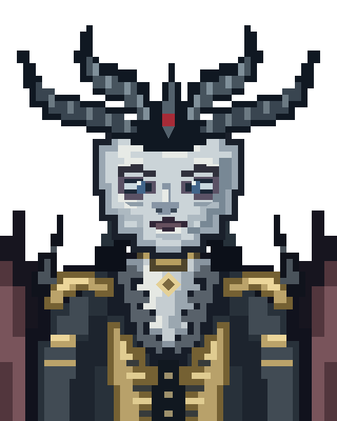

<!doctype html>
<html lang="en"><meta charset="utf-8"><title>Lilith neutral study</title>
<style>body{margin:0;background:#17191e;color:#dce1e7;font:16px monospace}main{display:flex;gap:40px;align-items:center;padding:32px}img{image-rendering:pixelated;object-fit:contain}figure{margin:0;text-align:center}figcaption{padding:14px}.large{width:480px;height:600px}.small{width:240px;height:300px}</style>
<main><figure><figcaption>Neutral base — enlarged</figcaption></figure><figure><figcaption>Dialogue-size study</figcaption></figure></main></html>
